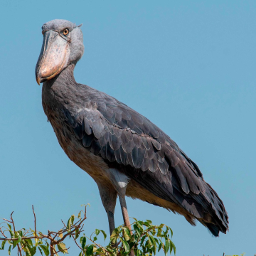
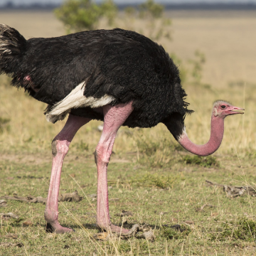
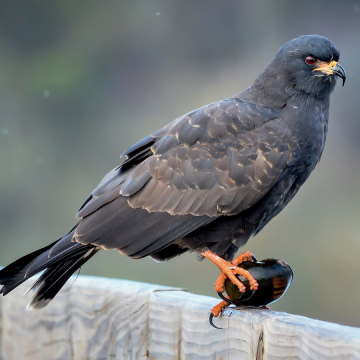
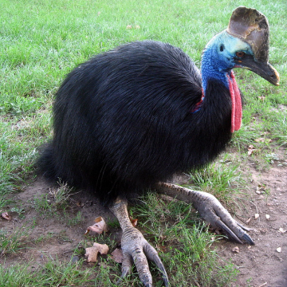

Especie de ave que no se encuentran de manera autóctona en un lugar, o sea que han sido trasladadas o son originarias de un país o zona que no es en el que se encuentra actualmente.

Picozapato
Ave completamente única que forma su propia familia. El plumaje es uniformemente gris en los adultos y parduzco en los inmaduros. La estructura es similar a la de una cigüeña en general, pero con un cuello grueso y un pico enorme en forma de gancho. En vuelo, que a veces llega a ser bastante alto, sus largas patas cuelgan. Se encuentra en pantanos profundos, especialmente en pantanos de papiro. Suele estar solo o en pareja.

Avestruz Común
Ave masiva, conspicua, no voladora, con cuello largo y patas robustas. Los machos maduros tienen plumaje blanco y negro, con piel rosada. Las hembras y los inmaduros son de color marrón grisáceo más apagado. Pequeños grupos deambulan por el campo abierto y ligeramente arbolado; puede caminar hasta varios kilómetros al día. Las alas rechonchas se utilizan para espectaculares exhibiciones de apareamiento y baños de polvo. Las llamadas resonantes se pueden escuchar desde largas distancias.

Caracolero
Ave rapaz que come caracoles. Ampliamente distribuido y relativamente común en Centroamérica y Suramérica, pero con un rango muy restringido en Estados Unidos. Se encuentra exclusivamente alrededor de lagos y pantanos con abundante vegetación. El macho adulto es completamente gris oscuro con los ojos rojos, los pies y el pico anaranjado (brevemente rojos en periodo reproductivo). Las hembras y los inmaduros son marrones rayados. Observe el pico muy ganchudo, las alas anchas y largas, la cola corta oscura con una base blanca arriba y abajo.

Casuario Común
Enorme ave no voladora con plumaje oscuro y brillante y una gran placa en forma de cuerno en una cabeza colorida con dos barbas rojas en el cuello. Es poco probable que se confunda con otras especies. Las crías son marrones y fuertemente rayadas. Las aves juveniles e inmaduras son similares a los adultos pero más marrones y con una placa de cabeza ausente o en desarrollo. Se encuentra en la densa selva tropical, donde se le puede ver cruzando o a lo largo de los caminos.